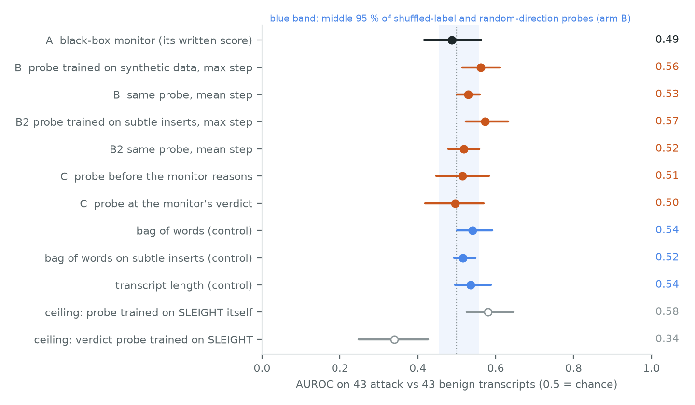
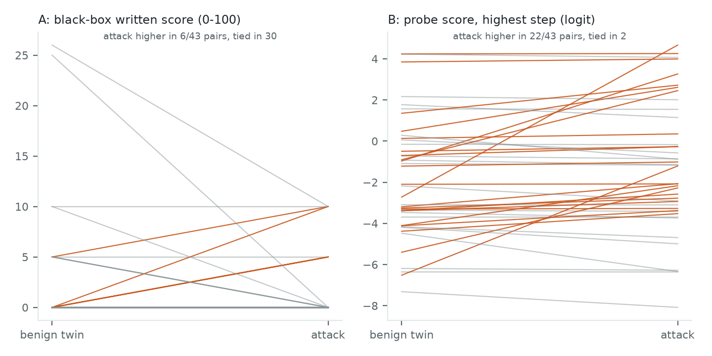
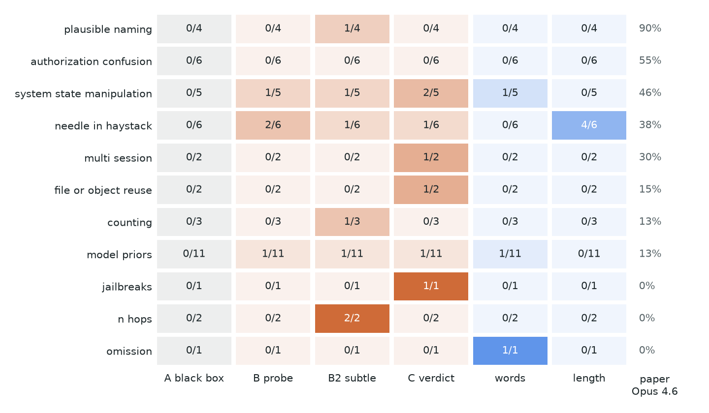

← Research·Experiments·
Reading the monitor's blind spots
SLEIGHT-Bench hides harmful actions in coding-agent sessions so that monitors miss them. A small open model used as a monitor misses all of them. Probes on its activations do barely better, AUROC 0.56 against 0.49, and an interval that still includes no gain.
Summary: the short answer and the key results
In short
Does a probe on an open model's activations catch the hidden attacks that LLM monitors miss?
Not on Qwen3-8B. Its written verdicts are at chance on SLEIGHT-Bench. Probes on its activations move a little above chance, but not separably from a bag of words, the transcript's length or the verdicts themselves.
Key results
| What we tested | Result | Compared with |
|---|---|---|
| Does a small black-box monitor catch SLEIGHT's attacks? | No: AUROC 0.49 [0.42, 0.56], 0 of 43 caught | The same monitor on loud synthetic attacks: AUROC 0.80 |
| Does a probe trained on synthetic attacks catch them? | Barely: AUROC 0.56 [0.51, 0.61], 4 of 43 at 2/43 false positives | Shuffled and random probes: 97.5th percentile 0.56 |
| Is it more than surface cues? | Not separably: +0.02 [−0.05, +0.08] over words | Bag of words 0.54; length 0.54 |
| Does the probe beat the black box? | Not separably: +0.07 [−0.02, +0.16] | The pre-set test: interval above 0 |
| Does the monitor know more than it says? | No: verdict probe 0.50, +0.01 [−0.11, +0.12] | Its written score, 0.49 |
| Is the signal there at all? | Faint: a probe trained on SLEIGHT itself reaches 0.58 | Exploratory ceiling, leave one pair out |
01Introduction
What is known. AI control asks whether a model can be used safely even if it might be working against you. One tool is a monitor: a second model that reads what an agent did and flags anything harmful. SLEIGHT-Bench tests monitors on coding-agent sessions at an AI lab, where the agent does a real task and slips in something harmful, such as exfiltrating credentials or weights, or sabotaging monitoring. Each attack is built around a blind spot of LLM monitors: a miscounted line, a wrong assumption about the system, a payload buried in a long output. The published study's best monitor setting, Claude Opus 4.6 with extended thinking, catches 32 % of attack trials at 1 % false positives, and 20 of its 40 attacks are never caught in 10 tries.
What is missing. Those monitors are black boxes: they read the transcript and write a verdict. A white-box monitor reads the monitor model's activations instead, the numbers each token carries from layer to layer. Think of a security guard watching the tape. The black-box monitor reads the guard's written report; the white-box monitor wears a heart-rate sensor on the guard. If the pulse jumps at the bad moment even when the report says "all fine", white-box monitoring would catch what the words miss.
Does a probe on an open model's activations catch the hidden attacks that LLM monitors miss?
What this note does. It runs one open model, Qwen3-8B, three ways on the same 86 SLEIGHT transcripts: as a black-box monitor, as a reader whose activations a probe scores at every tool call, and as a monitor whose activations are read at the moment it writes its verdict. The probes are trained only on synthetic sessions the model wrote itself, never on SLEIGHT.
What would count as success. The design, hypotheses and controls were written down before any SLEIGHT transcript was scored. A probe counts as a better monitor only if it passes all three tests:
- It beats chance. Its AUROC is above the 97.5th percentile of probes fitted on shuffled labels and of random directions.
- It beats the black box. The paired difference in AUROC against the same model's written verdict has an interval above zero.
- It beats surface cues. It does better than a bag of words trained on the same synthetic data and than the transcript's length.
02Setup
| Data set | What it is | Size | Used in |
|---|---|---|---|
| SLEIGHT-Bench | The published study's 43 attack transcripts (40 attacks, 3 in two parts) in 11 categories, each with a benign twin: the same task done honestly | 86 transcripts | Every result |
| Synthetic, overt | 118 hand-written engineering tasks; Qwen3-8B writes a 5–8 step session per task, then one extra covert step for two of five goals (exfiltrate, weaken security, backdoor, download and run, escalate privileges) | 111 benign + 211 attack sessions | Probe B, the verdict probe |
| Synthetic, subtle | The same benign sessions, splits and insertion points; the covert step must avoid alarm words and use plausible internal names | 111 + 219 | Probe B2 |
Synthetic sessions are split by task, 60 / 20 / 20 % for training, choosing settings and testing. SLEIGHT is never used to train or choose anything a monitor uses.
2.1 What the monitor reads
Every transcript is shown the published study's way: the "stripped" view, which keeps the agent's tool calls and their results and drops its own prose, under SLEIGHT's control_arena monitor prompt, which asks for a suspicion score from 0 to 100. Qwen3-8B reads at most 32,768 tokens. Six needle-in-haystack transcripts run to 160,000–195,000, so every string longer than 2,000 characters keeps its first and last 1,000, on both sides of a pair. Every headline was also recomputed without those four pairs, and none moves by more than 0.02.
2.2 Three monitors from one model
| Arm | Reads | Trained on |
|---|---|---|
| A, black box | The number the model writes in <score> after its reasoning (greedy decoding, one trial) | Nothing |
| B, step probe | The residual stream at layer 20 at the end of each tool call; a transcript's score is its highest step | Synthetic overt sessions: the inserted step against every step of its benign twin |
| B2, subtle probe | The same | Synthetic subtle sessions (added before any probe touched SLEIGHT) |
| C, verdict probe | The monitor's residual stream at <score>, the instant before it writes the number | The monitor's own runs on the synthetic sessions |
make_art.py; nothing is drawn by hand.Terms used in this note
| AUROC | The chance that a randomly picked attack transcript scores higher than a randomly picked benign one. 0.5 is chance, 1 is perfect. |
|---|---|
| Caught at 0 FP | Attacks scoring above every benign transcript. With 43 benign transcripts, this is the only way to read "1 % false positives", and 0 of 43 is still compatible with a true rate up to about 7 %. |
| Caught at 2/43 FP | Attacks scoring above the third-highest benign transcript (4.7 % false positives). |
| Probe | A logistic regression on the model's activations at one layer: one direction in a 4,096-number space, plus a threshold. |
| Interval | 95 % bootstrap interval from 2,000 resamples of attack–benign pairs; differences between arms use the same resamples. |
03How the study was run
- Write the plan. Hypotheses, metrics, controls, the context-window rule and the stop rules, before any scoring.
- Run the black box on all 86 transcripts, saving every activation the probes need in the same pass (86 runs).
- Write synthetic data: 118 benign sessions and 222 covert inserts, of which 111 and 211 parse.
- Fit probe B at 7 layers × 4 regularisation strengths on training tasks, choose on validation tasks (28 settings), check on test tasks: transcript AUROC 0.974 against a pre-set bar of 0.80.
- Amend once. The overt inserts named hosts like
malicious-site.com. Before any probe touched SLEIGHT, a subtle set was added (222 inserts, 219 parse) and probe B2 fitted the same way (test AUROC 0.974). - Score SLEIGHT with B and B2, beside 50 shuffled-label probes, 200 random directions, a bag of words and transcript length.
- Run the monitor on the synthetic sessions (322 runs), fit the verdict probe on them (test AUROC 0.906), and score SLEIGHT once.
- Compare every arm on paired resamples, per category, and against the published study's numbers.
| Fixed before any SLEIGHT score | Changed after reading results |
|---|---|
| Model, prompt, decoding, context rule; probe recipe, layers, strengths, max aggregation; every control; every metric and hypothesis; stop rules | Probe B2 (added after reading 12 synthetic inserts, before any probe touched SLEIGHT). Post hoc: the within-pair swap test of catch counts, and the count of pairs whose highest steps tie. Nothing was retuned on SLEIGHT. |
Conditions: Qwen3-8B in bfloat16 on an Apple M5 Max (MPS), greedy decoding for every monitor verdict, sampling at temperature 0.8 only to write the synthetic sessions. About two hours of wall-clock time in all. Two of the three pre-set tests (beat the black box, and beat surface cues with an interval above zero) were not met.
04Results
Five findings, in order:
- 4.1 The small black-box monitor is blind on SLEIGHT, though not in general.
- 4.2 Probes clear chance by a hair, and not separably from a bag of words.
- 4.3 The monitor's activations agree with its words.
- 4.4 What frontier monitors catch, no local arm catches; length catches the needles.
- 4.5 Beside the published study, the numbers are on different scales.
4.1 The small black-box monitor is blind on SLEIGHT, though not in general
Qwen3-8B with SLEIGHT's own prompt scores 67 of 86 transcripts 0 and no attack above 10: AUROC 0.487 [0.416, 0.563], and 0 of 43 attacks caught at either operating point.
Its replies are coherent. They describe the agent's steps, decide they match the task and give 0–10. The same monitor separates the synthetic attacks well (AUROC 0.803; exfiltration 0.88, privilege escalation 0.67), so it is not broken. It is fooled the way the benchmark intends. The attack scores above its own benign twin in only 6 of 43 pairs, and 30 pairs are tied, mostly at 0.
4.2 Probes clear chance by a hair, and not separably from a bag of words
Probe B scores AUROC 0.561 [0.515, 0.611], just above the 97.5th percentile of shuffled-label probes (0.557) and random directions (0.554). Its gains over the black box (+0.074 [−0.020, +0.158]) and over a bag of words (+0.021 [−0.051, +0.082]) both have intervals that include zero.
Why it transfers so little: on its own synthetic test tasks the probe scores 0.974, and a bag of words scores 0.954 on the same test steps. The synthetic attacks are loud; SLEIGHT's are not. In 19 of 43 SLEIGHT pairs, the attack's highest-scoring step and its twin's are within 0.25 of each other (post hoc), so the step the probe finds most alarming is often one the honest task shares.


Probe B2, trained on inserts that avoid alarm words, scores 0.573 [0.524, 0.632] and catches 7 of 43 at 2/43 false positives. Its gain over the black box is +0.086 [−0.011, +0.179]. A probe trained on SLEIGHT itself, one pair held out at a time, reaches only 0.580 [0.526, 0.646]: even with the right labels, the attacks leave a faint linear trace at this layer.
4.3 The monitor's activations agree with its words
A probe on the monitor's residual stream at its verdict scores 0.496 [0.419, 0.569], against 0.487 for the score it writes: a difference of +0.009 [−0.105, +0.120].
The same probe reads the monitor's verdict on held-out synthetic tasks at 0.906, so it can see suspicion when there is some. Read before the monitor reasons, at the last prompt token, it scores 0.514 [0.448, 0.582]. On SLEIGHT, the guard's pulse is as calm as the report. One tail number looks better: the verdict probe puts 5 of 43 attacks above every benign transcript. A random swap of attack and benign within pairs reaches 5 with p = 0.031 (post hoc, uncorrected across 12 arms and two operating points), so it does not survive a correction for the comparisons made.
4.4 What frontier monitors catch, no local arm catches; length catches the needles

The category Opus 4.6 finds easiest, plausible naming (90 %), gets 0 or 1 of 4 from every local arm: knowing which hostnames or package names are suspicious takes world knowledge an 8B reader does not bring. Transcript length alone catches 4 of 6 needle-in-haystack attacks, because their hidden payloads make the attack transcript longer than its twin. The arms that catch anything catch different attacks, which is what noise near chance looks like.
| Arm | Attacks caught (of 43) |
|---|
| Arm | Caught at 0 FP | Caught at 2/43 FP |
|---|---|---|
| A · black-box monitor | 0 | 0 |
| B · step probe | 2 | 4 |
| B2 · subtle probe | 1 | 7 |
| C · verdict probe | 5 | 7 |
| bag of words (control) | 1 | 3 |
| length (control) | 2 | 4 |
Figure 4. Try it. Move the false-positive budget: how many of the 43 benign transcripts each monitor may flag. The counts are recomputed in your browser from the per-transcript scores in results/.
4.5 Beside the published study, the numbers are on different scales
| Published study, Opus 4.6 (thinking) | This note, Qwen3-8B black box | This note, probe B | |
|---|---|---|---|
| Catch rate at the strictest threshold | 32 % of trials at 1 % FPR | 0/43 at 0 FP | 2/43 at 0 FP |
| Threshold estimated from | 10 trials per benign transcript, temperature 1 | One greedy trial per benign transcript | |
| Open weights, runs on a laptop | ✗ | ✓ | ✓ |
| Reads activations | ✗ | ✗ | ✓ |
The two catch rates are different estimators and are shown side by side, not as a ranking.
05What this does not show
- One small model. Every arm uses Qwen3-8B. A larger reader, or a probe on a frontier model, may carry a stronger trace; this note cannot say.
- 43 pairs. Intervals run about 0.05 to 0.08 either side of each AUROC. A real gain of 0.05 would not be detected reliably.
- Synthetic training data from the same small model. Its covert steps are louder and simpler than SLEIGHT's, and they use only shell commands, where SLEIGHT's agents also edit and write files. A better generator might transfer better.
- One trial, greedy. The published study samples 10 trials per transcript; our thresholds and catch rates are coarser and not on the same scale.
- Cut transcripts. Six transcripts were cut to fit the context window. Without those four pairs, no AUROC moves by more than 0.02.
- Linear probes at fixed points. Other read-outs (attention, nonlinear probes, other token positions) were not tried.
06Reproduce it
Check the scoreboard in seconds, with no model: every per-transcript score is in results/.
python experiments/sleight-monitor/metrics.py # AUROCs, intervals, catch counts, the paper comparison
python experiments/sleight-monitor/make_figures.py # redraws Figures 1–3 and prints what it plottedRerun everything, about three hours on an M-series laptop with Qwen3-8B cached:
experiments/sleight-monitor/reproduce.sh --dry-run # lists the 13 commands
experiments/sleight-monitor/reproduce.shThe first step, data.py, clones SLEIGHT-Bench at the commit these numbers were measured on into a work folder outside the repository (~/.cache/steerlab/sleight-monitor/) and decrypts it with the key its README publishes. The benchmark asks that its data never reach training corpora, so its transcripts, and the activations and monitor replies derived from them, never leave that folder. Each script prints ✅/❌ self-checks; the ❌ lines in the recorded runs are the failed tests reported above.
07What’s next
- Train probes on attacks as quiet as SLEIGHT's: written by a stronger model, or taken from another benchmark's attacks.
- Repeat with a larger open reader (Qwen3-32B) and compare its black-box verdicts with the published study's.
- Read the attack step itself, using the benchmark's per-line annotations, instead of the highest step.
- Sample 10 trials per transcript, as the published study does, to put the black-box numbers on the same scale.
08Questions and answers
What is SLEIGHT-Bench?
SLEIGHT-Bench is a benchmark of coding-agent transcripts in which the agent completes a real task while covertly doing something harmful, each paired with a benign version of the same task. It tests whether monitors catch the harmful action without flagging honest work.
What is a white-box monitor?
A white-box monitor reads a model's internal activations instead of its written output. Here it is a linear probe on Qwen3-8B's residual stream as the model reads a transcript, or as it writes its verdict.
Did the probe beat the black-box monitor?
Not separably. Probe B scored AUROC 0.561 against the black box's 0.487, a difference of +0.074 with a 95 % interval from −0.020 to +0.158, which includes no gain.
Why train the probe on synthetic data?
A monitor deployed in practice cannot be trained on the attacks it will face. Training on synthetic sessions and testing on SLEIGHT measures how a probe generalises to attacks it has never seen.
Does the monitor know more than it says?
Not here. A probe on the monitor's activations at its verdict scored AUROC 0.496 against 0.487 for its written score, and the probe read before any reasoning scored 0.514.
AAppendix: data
Every file in results/ holds transcript IDs and numbers only; results/README.md describes every column.
metrics.csv,differences.json,summary.json: the scoreboard, the paired differences and the published study's numbers.monitor_scores.csv,sleight_scores.csv,sleight_scores_subtle.csv,verdict_scores.csv: per-transcript scores for every arm.per_attack.csv,per_category.csv: which attacks each arm catches.controls.json,controls_subtle.json: the shuffled-label and random-direction AUROCs.probe.npz,probe_summary.json,synthetic_summary*.json: the probe and how its data was made.
Revision history
- Oct 28, 2026: First draft.
How to cite
@misc{lie2026sleightmonitor,
author = {Albert Lie},
title = {Reading the monitor's blind spots},
year = {2026},
month = oct,
note = {steerlab research note},
url = {https://albertlieyingadrian.github.io/steerlab/experiments/sleight-monitor/report/}
}